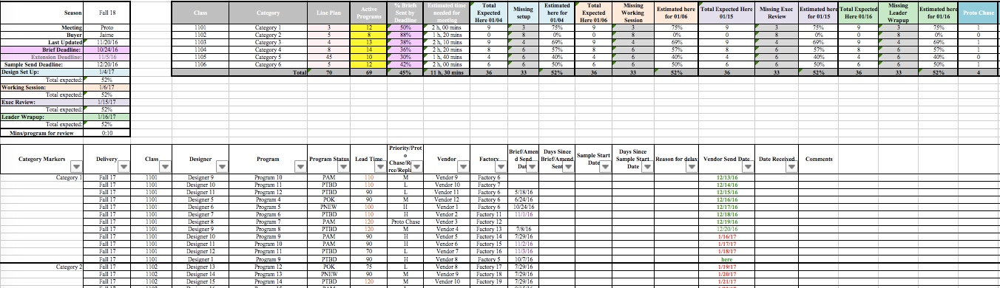

Working Schedule & Estimates File
Summary: This file works in tandem with the WIP file by using Program-level data to summarize how many programs will make it in time for each stage of the development review process. Progam-level lines are input from the WIP file to populate the Data Summary chart at the top, which is essential in planning for the product review process.
Category Tabs
The user inputs program level data from the WIP file via custom Excel Maros (or somewhat manually using the List Making tab in the WIP file), to populate the Data Summary chart. This data is conditionally formatted to visually show if a program will make it for the Proto or Finalization meeting. Data within the program lines are also conditionally formatted to show if a brief was sent late, priority lead times, and sample status.
Summary Chart
The summary chart on the left side lists key dates and information, such as relevant buyer, deadline for the design team to pass direction, and dates showing each scheduled review meeting. Once a meeting date is entered, the Data Summary chart on the right updates in the relevant column, and the user input date below becomes color coded indicators. Under each review date, there is a percentage which shows how many programs are expected to be available to review at that time. The final cell is an estimation of how much time will be needed to review each program during the actual Proto or Finalization meeting. Estimated meeting time is then calculated in the Data Summary chart, depending on how many programs will be present.

User input dates appear in the Data Summary chart, to the right, which will then populate with the program count that will be present on that date.

Data Summary Chart
The Data Summary chart shows in detail how many products in each category will be present for each meeting date. Based on the estimated arrival dates given below for each program, the formulas in the Data Summary chart determine what will make it in time for the meeting. If a program is listed below as 'Proto Chase' it will not be counted in the 'Active Programs' column until it has a send date.

Based on the user input program send dates below, the Data Summary chart populates each meeting date column with the number of programs that will be present to review on the respective date. Changing the sample send dates updates the Data Summary chart immediately, as well as the visual conditional formatting of the Program lines.

Within the Data Summary chart is a column that shows estimated time needed to review all products. This is calculated based on how many products will be present at the Proto or FInalization meeting, and the estimated time needed noted in the Summary chart. If either is updated, the time will reflect the change.
Totals Tab
Finally, all of the tabs are summarized in the 'TOTALS' tab for a consolidated reference of the entire department. This chart pulls data from each buyer's category tabs, and shows if the department as a whole is on track to review the most product, at the best time. If a significant number of programs will miss the meetings, the meeting dates may push out accordingly.